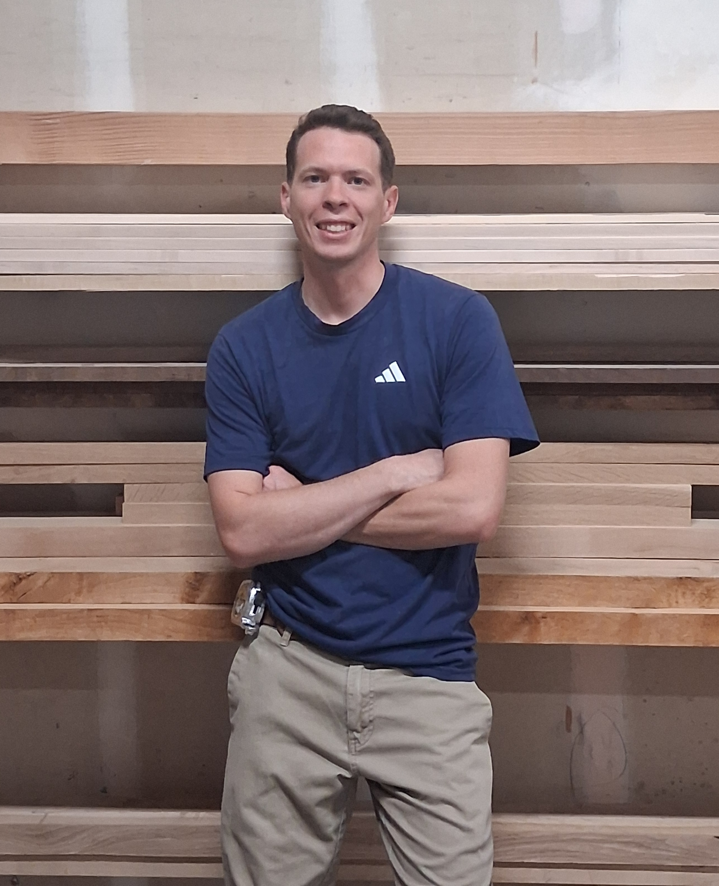

About Andy
My love for woodworking started at a young age, building simple projects out of scraps of wood at my grandpa's cabin. That early interest grew into a passion in high school, where I filled my schedule with as many woodworking classes as I could. While there, I competed in SkillsUSA, placing 1st in the state of Utah and 13th in the nation.
I went on to earn a Bachelor's degree from Utah Valley University in Technology Management, with an emphasis in cabinetry and architectural woodwork. Over the past 13 years, I have continued to develop my skills and experience in the woodworking industry, including five years as a business owner.
I enjoy building all kinds of projects, from custom cabinetry to one-of-a-kind furniture, but bunk beds and bunk rooms have become a particular passion of mine. I enjoy the challenge of creating something that is not only beautiful and well-built, but also functional and tailored specifically to the space and the people who will use it.
I take a lot of pride in the details of my work, but I believe that a great experience goes beyond craftsmanship. I strive to be reliable, communicate clearly, show up when I say I will, and deliver work that meets a high standard of quality.
When I'm not in the shop, I'm spending time with my wife and our two daughters. Woodworking is something I'm fortunate to genuinely enjoy—and I love being able to turn that passion into pieces that become part of other people's homes.